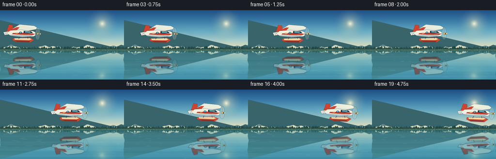
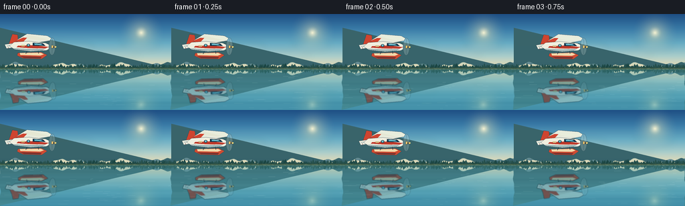
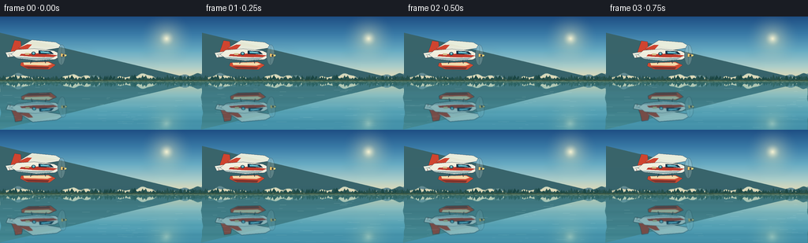

CODING AGENTS AS PIXEL WORLD MODELS
traex/DeepSeek-V4.1-Flash · phygen_058
点击播放 · 原生 RGB 像素
逐轮保存的候选
回放视频、检查图与代码变化。
每份候选均可单独播放。实际图片检查记录在下方工具轨迹中。
候选 01播放与检查图
点击播放 · 原生 RGB 像素

展开代码变化
--- 上一保存版本
+++ 本次保存版本
@@ -0,0 +1,416 @@
+from pathlib import Path
+
+import numpy as np
+from PIL import Image, ImageDraw, ImageFilter
+
+from artifact_io import save
+
+
+ROOT = Path(__file__).resolve().parent
+W, H = 256, 144
+SS = 4
+HW, HH = W * SS, H * SS
+FPS = 4
+N = 20
+WATERLINE = 82
+
+
+def srgb_gradient(stops, height):
+ positions = np.array([stop[0] for stop in stops], dtype=np.float32)
+ colors = np.array([stop[1] for stop in stops], dtype=np.float32)
+ y = np.linspace(0.0, 1.0, height, dtype=np.float32)
+ return np.stack(
+ [np.interp(y, positions, colors[:, channel]) for channel in range(3)],
+ axis=1,
+ )
+
+
+def scaled(points):
+ return [(int(round(x * SS)), int(round(y * SS))) for x, y in points]
+
+
+def add_radial_glow(image, center, radius, color, strength):
+ cx, cy = center
+ yy, xx = np.mgrid[0 : image.height, 0 : image.width]
+ distance = np.sqrt((xx - cx * SS) ** 2 + (yy - cy * SS) ** 2)
+ falloff = np.clip(1.0 - distance / (radius * SS), 0.0, 1.0) ** 2
+ alpha = (falloff * strength)[..., None]
+ base = np.asarray(image, dtype=np.float32)
+ tint = np.array(color, dtype=np.float32)
+ return Image.fromarray(np.clip(base * (1.0 - alpha) + tint * alpha, 0, 255).astype(np.uint8))
+
+
+def make_sky():
+ sky = srgb_gradient(
+ [
+ (0.00, (27, 77, 132)),
+ (0.25, (53, 119, 165)),
+ (0.52, (101, 170, 195)),
+ (0.76, (171, 205, 201)),
+ (0.92, (224, 218, 183)),
+ (1.00, (241, 224, 184)),
+ ],
+ int(WATERLINE * SS) + 2 * SS,
+ )
+ sky = np.repeat(sky[:, None, :], HW, axis=1)
+ image = Image.fromarray(sky.astype(np.uint8), "RGB")
+ image = add_radial_glow(image, (211, 28), 37, (255, 240, 184), 0.55)
+ image = add_radial_glow(image, (211, 28), 11, (255, 250, 218), 0.85)
+
+ cloud_layer = Image.new("RGBA", image.size, (0, 0, 0, 0))
+ draw = ImageDraw.Draw(cloud_layer)
+ clouds = [
+ (30, 46, 112, 12, 38),
+ (126, 58, 82, 8, 28),
+ (177, 45, 61, 7, 24),
+ (8, 69, 78, 7, 18),
+ ]
+ for x, y, width, height, opacity in clouds:
+ draw.ellipse(
+ scaled([(x, y), (x + width, y + height)]),
+ fill=(244, 244, 222, opacity),
+ )
+ draw.ellipse(
+ scaled([(x + width * 0.18, y - height * 0.38), (x + width * 0.68, y + height * 0.7)]),
+ fill=(250, 247, 227, int(opacity * 0.8)),
+ )
+ draw.ellipse(
+ scaled([(x + width * 0.56, y - height * 0.15), (x + width * 0.96, y + height * 0.75)]),
+ fill=(249, 244, 218, int(opacity * 0.72)),
+ )
+ cloud_layer = cloud_layer.filter(ImageFilter.GaussianBlur(5.0 * SS))
+ image = Image.alpha_composite(image.convert("RGBA"), cloud_layer).convert("RGB")
+ canvas = Image.new("RGB", (HW, HH), tuple(image.getpixel((HW // 2, image.height - 1))))
+ canvas.paste(image, (0, 0))
+ return canvas
+
+
+def ridge_y(x, base, waves):
+ value = np.full_like(x, base, dtype=np.float32)
+ for amplitude, frequency, phase in waves:
+ value += amplitude * np.sin(x * frequency + phase)
+ return value
+
+
+def draw_landscape(image):
+ draw = ImageDraw.Draw(image, "RGBA")
+ rng = np.random.default_rng(58)
+
+ xs = np.linspace(0, W, 257)
+ far = ridge_y(xs, 72.0, [(4.5, 0.060, 0.4), (2.2, 0.150, 1.8), (1.1, 0.34, 0.1)])
+ far_points = [(0, WATERLINE)] + [(int(x * SS), int(y * SS)) for x, y in zip(xs, far)]
+ far_points += [(HW, WATERLINE * SS)]
+ draw.polygon(far_points, fill=(91, 132, 143, 235))
+
+ near = ridge_y(xs, 77.0, [(2.7, 0.082, 2.7), (1.7, 0.195, 0.3), (0.8, 0.44, 1.1)])
+ near_points = [(0, WATERLINE)] + [(int(x * SS), int(y * SS)) for x, y in zip(xs, near)]
+ near_points += [(HW, WATERLINE * SS)]
+ draw.polygon(near_points, fill=(55, 99, 106, 255))
+
+ # A pale ridge line catches the low light and separates the two blue layers.
+ ridge_line = [(int(x * SS), int((y - 0.35) * SS)) for x, y in zip(xs, near)]
+ draw.line(ridge_line, fill=(112, 151, 139, 150), width=max(1, SS // 2))
+
+ # Layered riverbank vegetation, kept sparse enough to reveal its reflection.
+ for x in np.arange(-2, W + 3, 2.25):
+ tree_h = rng.uniform(2.5, 6.8)
+ tree_w = rng.uniform(1.4, 3.4)
+ center = x + rng.uniform(-1.0, 1.0)
+ base_y = WATERLINE - rng.uniform(0.0, 2.2)
+ shade = rng.integers(0, 18)
+ color = (25 + shade, 68 + shade, 65 + shade, 255)
+ draw.polygon(
+ scaled(
+ [
+ (center - tree_w, base_y),
+ (center, base_y - tree_h),
+ (center + tree_w, base_y),
+ ]
+ ),
+ fill=color,
+ )
+ if rng.random() > 0.72:
+ draw.line(
+ scaled([(center, base_y), (center, base_y + 2.2)]),
+ fill=(34, 61, 57, 220),
+ width=SS,
+ )
+
+ # Thin exposed bank and a broken reed edge.
+ draw.rectangle(
+ [0, int((WATERLINE - 1.4) * SS), HW, int((WATERLINE + 0.6) * SS)],
+ fill=(53, 82, 62, 230),
+ )
+ draw.line(
+ [(0, WATERLINE * SS), (HW, WATERLINE * SS)],
+ fill=(153, 163, 115, 190),
+ width=max(1, SS // 2),
+ )
+ for x in range(2, W, 7):
+ h = rng.uniform(2.0, 5.5)
+ lean = rng.uniform(-1.2, 1.2)
+ draw.line(
+ scaled([(x, WATERLINE), (x + lean, WATERLINE - h)]),
+ fill=(54, 84, 61, 210),
+ width=max(1, SS // 2),
+ )
+ return image
+
+
+def make_water(background, phase):
+ bg = np.asarray(background, dtype=np.float32)
+ water = np.empty((HH - WATERLINE * SS, HW, 3), dtype=np.float32)
+ y_out = np.arange(WATERLINE * SS, HH)
+ depth = (y_out - WATERLINE * SS) / float(HH - WATERLINE * SS)
+
+ for row_index, y in enumerate(y_out):
+ source_y = int(np.clip(2 * WATERLINE * SS - y, 0, HH - 1))
+ wobble = (
+ 0.85 * SS * np.sin(y / (6.0 * SS) + phase)
+ + 0.35 * SS * np.sin(y / (2.1 * SS) - phase * 1.7)
+ )
+ source_row = bg[source_y]
+ shift = int(round(wobble))
+ water[row_index] = np.roll(source_row, shift, axis=0)
+
+ # Crystal water: retain the sky's colors, but pull them toward river teal.
+ near_color = np.array([84, 166, 173], dtype=np.float32)
+ far_color = np.array([24, 91, 117], dtype=np.float32)
+ blend = 0.27 + 0.34 * depth[:, None]
+ water = water * (1.0 - blend[..., None]) + near_color * blend[..., None]
+ water = water * (1.0 - depth[:, None, None] * 0.10) + far_color * (depth[:, None, None] * 0.10)
+
+ # Very light horizontal averaging gives the reflection a glassy surface.
+ padded = np.pad(water, ((0, 0), (1, 1), (0, 0)), mode="edge")
+ water = padded[:, :-2] * 0.23 + padded[:, 1:-1] * 0.54 + padded[:, 2:] * 0.23
+
+ # Soft depth bands and glints make the water legible without breaking the mirror.
+ rows = np.arange(water.shape[0], dtype=np.float32)[:, None]
+ band = 3.0 * np.sin(rows * 0.115 + phase * 0.6) + 1.4 * np.sin(rows * 0.27 - phase)
+ water += band[..., None] * (0.3 + depth[:, None, None] * 0.7)
+
+ result = bg.copy()
+ result[WATERLINE * SS :] = np.clip(water, 0, 255)
+ return Image.fromarray(result.astype(np.uint8), "RGB")
+
+
+def draw_plane_sprite():
+ size = (82 * SS, 46 * SS)
+ sprite = Image.new("RGBA", size, (0, 0, 0, 0))
+ draw = ImageDraw.Draw(sprite, "RGBA")
+ outline = (25, 48, 62, 255)
+ outline_width = max(2, int(1.1 * SS))
+
+ # Tail fin and stabilizer.
+ draw.polygon(
+ scaled([(6, 23), (12, 4), (20, 5), (22, 23)]),
+ fill=(205, 67, 47, 255),
+ outline=outline,
+ )
+ draw.polygon(
+ scaled([(1, 20), (18, 17), (20, 23), (4, 26)]),
+ fill=(233, 235, 221, 255),
+ outline=outline,
+ )
+ draw.line(scaled([(4, 22), (18, 19)]), fill=(171, 191, 189, 210), width=SS)
+
+ # High main wing, with the far tip and a bright leading edge.
+ draw.polygon(
+ scaled([(17, 14), (34, 3), (64, 5), (75, 11), (54, 15), (28, 18)]),
+ fill=(229, 233, 219, 255),
+ outline=outline,
+ )
+ draw.polygon(
+ scaled([(34, 5), (64, 6), (72, 10), (53, 12), (31, 10)]),
+ fill=(250, 248, 226, 225),
+ )
+ draw.polygon(
+ scaled([(17, 14), (28, 9), (34, 9), (27, 17)]),
+ fill=(205, 67, 47, 255),
+ )
+ draw.line(scaled([(31, 18), (36, 29)]), fill=outline, width=max(1, SS // 2))
+ draw.line(scaled([(56, 15), (54, 27)]), fill=outline, width=max(1, SS // 2))
+
+ # Twin float and its struts.
+ draw.polygon(
+ scaled([(21, 32), (56, 30), (65, 34), (57, 40), (29, 40), (20, 36)]),
+ fill=(207, 75, 49, 255),
+ outline=outline,
+ )
+ draw.polygon(
+ scaled([(24, 32), (55, 30.7), (60, 33), (55, 35), (25, 35)]),
+ fill=(241, 216, 169, 255),
+ )
+ draw.polygon(
+ scaled([(24, 37), (57, 37), (55, 39.3), (30, 39.3)]),
+ fill=(126, 46, 39, 235),
+ )
+ draw.line(scaled([(35, 28), (33, 33)]), fill=outline, width=max(2, int(0.8 * SS)))
+ draw.line(scaled([(51, 28), (52, 32)]), fill=outline, width=max(2, int(0.8 * SS)))
+
+ # Fuselage.
+ draw.polygon(
+ scaled([(8, 22), (15, 16), (37, 14), (62, 16), (73, 21), (64, 27), (40, 29), (16, 27)]),
+ fill=(238, 237, 222, 255),
+ outline=outline,
+ )
+ draw.polygon(
+ scaled([(14, 25), (38, 25.7), (63, 24.5), (57, 27.2), (39, 28.2), (16, 26.4)]),
+ fill=(168, 190, 190, 220),
+ )
+ draw.polygon(
+ scaled([(21, 21.2), (45, 19.8), (67, 21.7), (62, 24), (40, 24.5), (19, 23.5)]),
+ fill=(190, 58, 43, 255),
+ )
+ draw.line(
+ scaled([(13, 18), (37, 16), (61, 17.5), (70, 20.5)]),
+ fill=(255, 252, 233, 245),
+ width=max(1, SS // 2),
+ )
+
+ # Cockpit and cabin windows.
+ draw.polygon(
+ scaled([(43, 16.2), (58, 16.8), (62, 20.2), (43, 20.4)]),
+ fill=(18, 50, 72, 255),
+ outline=outline,
+ )
+ draw.polygon(
+ scaled([(45, 17.0), (55, 17.4), (58, 19.2), (46, 19.4)]),
+ fill=(94, 183, 202, 255),
+ )
+ draw.line(scaled([(48, 17.2), (55, 18.9)]), fill=(215, 244, 236, 210), width=max(1, SS // 2))
+ draw.ellipse(scaled([(34.0, 18.0), (39.0, 22.0)]), fill=(24, 56, 74, 255), outline=outline)
+ draw.ellipse(scaled([(35.0, 18.6), (38.0, 21.2)]), fill=(116, 196, 207, 230))
+
+ # Spinning propeller disk, spinner, and warm navigation light.
+ draw.ellipse(
+ scaled([(67, 8), (77, 34)]),
+ fill=(217, 228, 222, 58),
+ outline=(57, 83, 94, 125),
+ width=max(1, SS // 2),
+ )
+ draw.line(scaled([(72, 9.5), (72, 32.5)]), fill=(78, 101, 107, 100), width=max(1, SS // 2))
+ draw.polygon(
+ scaled([(71, 19.0), (78, 20.6), (78, 22.8), (71, 23.4)]),
+ fill=(244, 197, 111, 255),
+ outline=outline,
+ )
+ draw.ellipse(scaled([(73.4, 20.2), (75.4, 23.0)]), fill=(55, 66, 67, 255))
+ draw.ellipse(scaled([(76.6, 20.5), (78.2, 22.2)]), fill=(255, 218, 128, 255))
+
+ # Small painted details make the silhouette read cleanly at 256 px wide.
+ draw.rectangle(scaled([(26, 20.0), (31, 22.0)]), fill=(242, 207, 138, 210))
+ draw.line(scaled([(6, 23), (6.8, 26)]), fill=(97, 33, 31, 210), width=max(1, SS // 2))
+ return sprite
+
+
+def distort_reflection(image, phase):
+ array = np.asarray(image, dtype=np.float32)
+ out = np.zeros_like(array)
+ for y in range(array.shape[0]):
+ shift = int(round(0.65 * SS * np.sin(y / (4.6 * SS) + phase * 1.15)))
+ out[y] = np.roll(array[y], shift, axis=0)
+ return Image.fromarray(np.clip(out, 0, 255).astype(np.uint8), "RGBA")
+
+
+def tint_reflection(image):
+ array = np.asarray(image, dtype=np.float32)
+ rgb = array[..., :3]
+ alpha = array[..., 3]
+ tinted = rgb * np.array([0.73, 0.86, 0.91], dtype=np.float32)
+ tinted = tinted * 0.82 + np.array([30, 110, 128], dtype=np.float32) * 0.18
+ array[..., :3] = np.clip(tinted, 0, 255)
+ array[..., 3] = alpha * 0.78
+ return Image.fromarray(array.astype(np.uint8), "RGBA")
+
+
+def add_water_surface(image, phase, rng):
+ overlay = Image.new("RGBA", (HW, HH), (0, 0, 0, 0))
+ draw = ImageDraw.Draw(overlay, "RGBA")
+ for index in range(64):
+ y = rng.uniform(WATERLINE + 2.0, H - 1.0)
+ length = rng.uniform(3.0, 16.0) * (0.65 + (y - WATERLINE) / H)
+ x = rng.uniform(-8, W - 2)
+ drift = 2.2 * np.sin(phase + index * 0.73)
+ wave = 0.55 * np.sin(phase * 0.8 + x * 0.1)
+ alpha = int(18 + 30 * (1.0 - (y - WATERLINE) / (H - WATERLINE)))
+ draw.line(
+ scaled([(x + drift, y + wave), (x + drift + length, y + wave)]),
+ fill=(213, 244, 236, alpha),
+ width=max(1, SS // 2),
+ )
+ for x in range(0, W, 6):
+ y = WATERLINE + 1.0 + 0.55 * np.sin(x * 0.15 + phase)
+ draw.line(
+ scaled([(x, y), (x + 3.2, y)]),
+ fill=(240, 247, 220, 55),
+ width=max(1, SS // 2),
+ )
+ return Image.alpha_composite(image.convert("RGBA"), overlay).convert("RGB")
+
+
+def compose_frame(background, plane_sprite, frame_index):
+ t = frame_index / (N - 1)
+ phase = 2.0 * np.pi * t
+ water_phase = phase * 0.55
+
+ image = make_water(background, water_phase)
+ rng = np.random.default_rng(580 + frame_index)
+
+ x = 5.0 + 169.0 * t
+ y = 25.2 + 1.5 * np.sin(phase * 0.85 + 0.25)
+ angle = -1.8 + 1.15 * np.sin(phase * 0.7 + 0.15)
+ rotated = plane_sprite.rotate(
+ angle,
+ resample=Image.Resampling.BICUBIC,
+ expand=True,
+ center=(plane_sprite.width * 0.5, plane_sprite.height * 0.52),
+ )
+ px = int(round(x * SS))
+ py = int(round(y * SS))
+
+ reflection = rotated.transpose(Image.Transpose.FLIP_TOP_BOTTOM)
+ reflection = tint_reflection(reflection)
+ reflection = distort_reflection(reflection, water_phase)
+ reflection = reflection.filter(ImageFilter.GaussianBlur(0.55 * SS))
+ reflected_y = int(round((2 * WATERLINE - y) * SS)) - rotated.height
+ reflection_layer = Image.new("RGBA", (HW, HH), (0, 0, 0, 0))
+ reflection_layer.alpha_composite(reflection, (px + SS, reflected_y))
+
+ # Crop the reflection to the river and let its alpha break gently with the ripples.
+ mask = np.zeros((HH, HW), dtype=np.uint8)
+ mask[WATERLINE * SS :] = 255
+ mask_image = Image.fromarray(mask, "L")
+ reflection_alpha = reflection_layer.getchannel("A")
+ reflection_layer.putalpha(Image.composite(reflection_alpha, Image.new("L", (HW, HH), 0), mask_image))
+
+ image = Image.alpha_composite(image.convert("RGBA"), reflection_layer).convert("RGB")
+
+ # The aircraft is composited last so it stays crisp against the glassy river.
+ plane_layer = Image.new("RGBA", (HW, HH), (0, 0, 0, 0))
+ plane_layer.alpha_composite(rotated, (px, py))
+ image = Image.alpha_composite(image.convert("RGBA"), plane_layer).convert("RGB")
+
+ image = add_water_surface(image, water_phase, rng)
+
+ # A subtle warm/cool split keeps the scene from feeling flat.
+ array = np.asarray(image, dtype=np.float32)
+ yy = np.linspace(0.0, 1.0, HH, dtype=np.float32)[:, None, None]
+ array[..., 0] += (4.0 * (1.0 - yy) - 2.0 * yy)[..., 0]
+ array[..., 1] += (2.0 * (1.0 - yy))[..., 0]
+ array[..., 2] += (3.0 * yy)[..., 0]
+ image = Image.fromarray(np.clip(array, 0, 255).astype(np.uint8), "RGB")
+ return image.resize((W, H), Image.Resampling.LANCZOS)
+
+
+def main():
+ background = draw_landscape(make_sky())
+ plane_sprite = draw_plane_sprite()
+ frames = np.stack(
+ [np.asarray(compose_frame(background, plane_sprite, index), dtype=np.uint8) for index in range(N)]
+ )
+ save(frames, ROOT)
+
+
+if __name__ == "__main__":
+ main()
候选 02播放与检查图
点击播放 · 原生 RGB 像素


展开代码变化
--- 上一保存版本
+++ 本次保存版本
@@ -60,10 +60,10 @@
cloud_layer = Image.new("RGBA", image.size, (0, 0, 0, 0))
draw = ImageDraw.Draw(cloud_layer)
clouds = [
- (30, 46, 112, 12, 38),
- (126, 58, 82, 8, 28),
- (177, 45, 61, 7, 24),
- (8, 69, 78, 7, 18),
+ (24, 43, 96, 10, 22),
+ (128, 59, 69, 6, 17),
+ (180, 48, 52, 5, 15),
+ (8, 69, 68, 6, 12),
]
for x, y, width, height, opacity in clouds:
draw.ellipse(
@@ -78,7 +78,7 @@
scaled([(x + width * 0.56, y - height * 0.15), (x + width * 0.96, y + height * 0.75)]),
fill=(249, 244, 218, int(opacity * 0.72)),
)
- cloud_layer = cloud_layer.filter(ImageFilter.GaussianBlur(5.0 * SS))
+ cloud_layer = cloud_layer.filter(ImageFilter.GaussianBlur(4.0 * SS))
image = Image.alpha_composite(image.convert("RGBA"), cloud_layer).convert("RGB")
canvas = Image.new("RGB", (HW, HH), tuple(image.getpixel((HW // 2, image.height - 1))))
canvas.paste(image, (0, 0))
@@ -320,7 +320,7 @@
tinted = rgb * np.array([0.73, 0.86, 0.91], dtype=np.float32)
tinted = tinted * 0.82 + np.array([30, 110, 128], dtype=np.float32) * 0.18
array[..., :3] = np.clip(tinted, 0, 255)
- array[..., 3] = alpha * 0.78
+ array[..., 3] = alpha * 0.86
return Image.fromarray(array.astype(np.uint8), "RGBA")
@@ -372,7 +372,7 @@
reflection = rotated.transpose(Image.Transpose.FLIP_TOP_BOTTOM)
reflection = tint_reflection(reflection)
reflection = distort_reflection(reflection, water_phase)
- reflection = reflection.filter(ImageFilter.GaussianBlur(0.55 * SS))
+ reflection = reflection.filter(ImageFilter.GaussianBlur(0.40 * SS))
reflected_y = int(round((2 * WATERLINE - y) * SS)) - rotated.height
reflection_layer = Image.new("RGBA", (HW, HH), (0, 0, 0, 0))
reflection_layer.alpha_composite(reflection, (px + SS, reflected_y))
候选 04播放与检查图
点击播放 · 原生 RGB 像素

展开代码变化
--- 上一保存版本
+++ 本次保存版本
@@ -357,7 +357,7 @@
image = make_water(background, water_phase)
rng = np.random.default_rng(580 + frame_index)
- x = 5.0 + 169.0 * t
+ x = 5.0 + 161.0 * t
y = 25.2 + 1.5 * np.sin(phase * 0.85 + 0.25)
angle = -1.8 + 1.15 * np.sin(phase * 0.7 + 0.15)
rotated = plane_sprite.rotate(
候选 05播放与检查图
可观测工具轨迹
实际执行的命令与返回图片。
命令 1exit 0
/bin/bash -c "pwd && rg --files -g 'prompt.txt' -g 'GENERATION_RULES.md' -g 'task_spec.json' -g '"'!*.mp4'"' -g '"'!*.mov'"'"
命令 2exit 0
/bin/bash -c 'ls -la'
命令 3exit 0
/bin/bash -c 'git status --short'
命令 4exit 0
/bin/bash -c 'cat prompt.txt'
命令 5exit 0
/bin/bash -c 'cat GENERATION_RULES.md'
命令 6exit 0
/bin/bash -c 'cat task_spec.json'
命令 7exit 0
/bin/bash -c "sed -n '1,240p' artifact_io.py && sed -n '1,220p' player_template.html"
命令 8exit 1
/bin/bash -c 'python generate.py'
命令 9exit 1
/bin/bash -c 'python generate.py'
命令 10exit 1
/bin/bash -c 'python generate.py'
命令 11exit 1
/bin/bash -c 'python generate.py'
命令 12exit 0
/bin/bash -c 'python generate.py'
命令 13exit 0
/bin/bash -c 'ls -lh inspection.png transition_check.png pixels.npz index.html frames | head -30'
命令 14exit 0
/bin/bash -c 'command -v chafa || command -v viu || command -v jp2 || command -v img2txt || true'
命令 15exit 0
/bin/bash -c "python - <<'PY'
from PIL import Image
import numpy as np
for name in ['inspection.png','frames/00.png','frames/10.png','frames/19.png']:
im=np.asarray(Image.open(name).convert('RGB'))
print(name, im.shape, 'mean', im.mean((0,1)).round(1), 'minmax', im.min(),im.max(), 'std',round(float(im.std()),1))
PY"命令 16exit 0
/bin/bash -c "python - <<'PY'
from PIL import Image
import numpy as np
for i in [0,5,10,15,19]:
a=np.asarray(Image.open(f'frames/{i:02d}.png').convert('RGB'))
red=(a[:,:,0]>130)&(a[:,:,0]>a[:,:,1]*1.35)&(a[:,:,0]>a[:,:,2]*1.25)
ys,xs=np.where(red)
bright=(a.mean(2)>190)
by,bx=np.where(bright[:82])
print(f'frame {i:02d}: red bbox x={xs.min()}:{xs.max()} y={ys.min()}:{ys.max()} n={len(xs)}, sky-bright bbox x={bx.min()}:{bx.max()} y={by.min()}:{by.max()}')
PY"命令 17exit 0
/bin/bash -c "python - <<'PY'
from PIL import Image
import numpy as np
chars=' .,:;irsXA253hMHGS#9B&@'
for fi in [0,10,19]:
im=Image.open(f'frames/{fi:02d}.png').convert('L').resize((128,72))
a=np.asarray(im)
print('\\nFRAME',fi)
for row in a:
print(''.join(chars[min(len(chars)-1,int(v)*len(chars)//256)] for v in row))
PY"命令 18exit 0
/bin/bash -c "python - <<'PY'
from pathlib import Path
from PIL import Image
import numpy as np
frames=np.stack([np.asarray(Image.open(p).convert('RGB')) for p in sorted(Path('frames').glob('*.png'))])
print('shape',frames.shape,'dtype',frames.dtype)
d=np.abs(frames[1:].astype(np.int16)-frames[:-1].astype(np.int16))
print('temporal mean abs diff per step', d.mean((1,2,3)).round(2).tolist())
for i in [0,9,19]:
a=frames[i]
sky=a[:82]; water=a[82:]
print(i, 'sky mean',sky.mean((0,1)).round(1),'water mean',water.mean((0,1)).round(1),
'water std',round(float(water.std()),1),'unique colors',len(np.unique(a.reshape(-1,3),axis=0)))
# Reflection visibility: compare contrast in lower-right region where the plane and its mirror should be.
for i in [0,9,19]:
a=frames[i].astype(np.float32)
lum=a.mean(2)
x0=int(5+169*i/19)
water=lum[90:140,max(0,x0):min(256,x0+90)]
print('frame',i,'reflection-region contrast',round(float(water.std()),1),'max',round(float(water.max()),1))
PY"命令 19exit 0
/bin/bash -c 'python generate.py'
命令 20exit 0
/bin/bash -c 'python generate.py'
命令 21exit 0
/bin/bash -c "python - <<'PY'
from pathlib import Path
import json, base64, io, wave
import numpy as np
from PIL import Image
from artifact_io import save
spec=json.loads(Path('task_spec.json').read_text())
frames=np.stack([np.asarray(Image.open(p).convert('RGB')) for p in sorted(Path('frames').glob('*.png'))])
assert frames.shape==(20,144,256,3) and frames.dtype==np.uint8
assert len(np.unique(frames.reshape(-1,3),axis=0))>1000
npz=np.load('pixels.npz')
assert npz['pixels'].shape==(144,256,20) and npz['pixels'].dtype==np.uint32
packed=frames.astype(np.uint32)
expected=(packed[:,:,:,0]<<16)|(packed[:,:,:,1]<<8)|packed[:,:,:,2]
assert np.array_equal(npz['pixels'],expected.transpose(1,2,0))
html=Path('index.html').read_text()
assert 'window.__pixelReady=true' in html and '__DATA__' not in html and '__ID__' not in html
# Verify final-frame aircraft does not clip the right boundary and all frames vary.
for i in [0,9,19]:
a=frames[i]
red=(a[:,:,0]>120)&(a[:,:,0]>a[:,:,1]*1.30)&(a[:,:,0]>a[:,:,2]*1.20)
ys,xs=np.where(red[:82])
print(i, 'red bbox', (int(xs.min()),int(ys.min()),int(xs.max()),int(ys.max())))
d=np.abs(frames[1:].astype(np.int16)-frames[:-1].astype(np.int16)).mean((1,2,3))
assert (d>1.0).all()
print('validated',frames.shape,'mean_step_diff',round(float(d.mean()),2),'files',sorted(p.name for p in Path('.').glob('*') if p.is_file()))
PY"保存候选 5 份；完成命令 21 次；可验证图片返回 0 张。原始 API 响应与完整日志保留在本地。